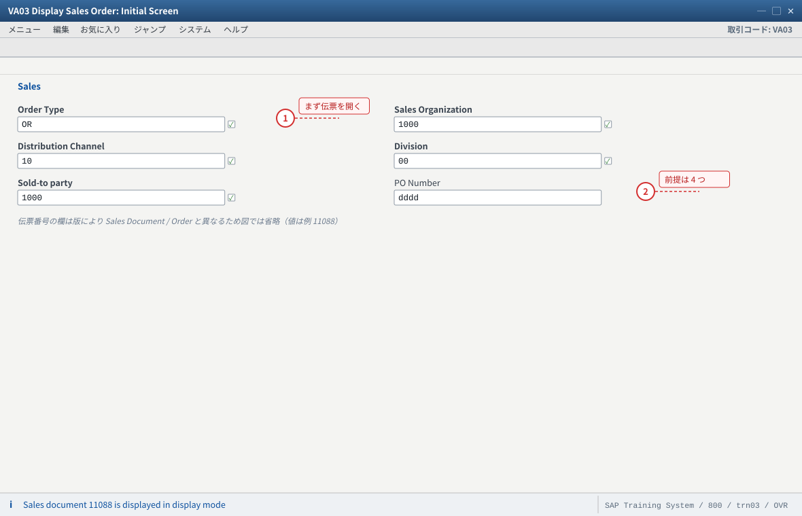
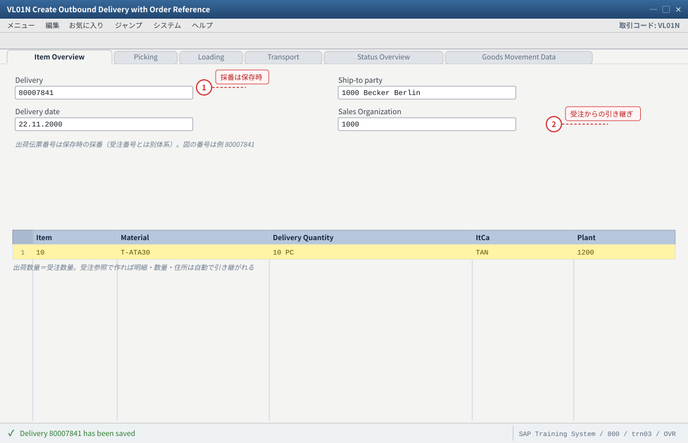
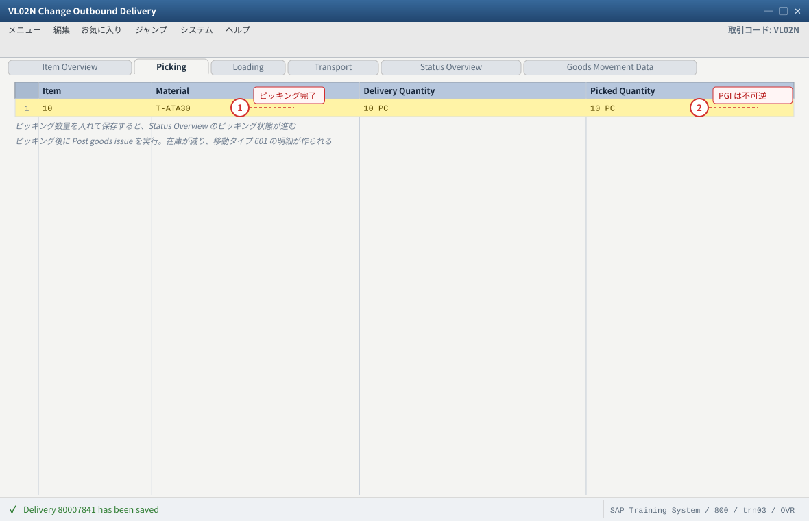
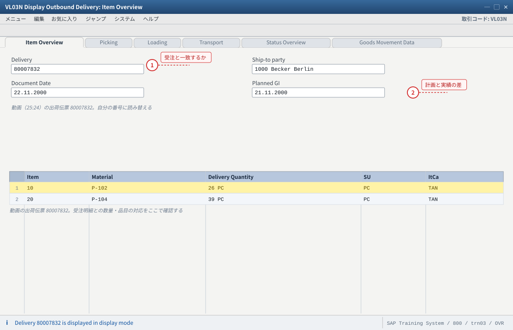
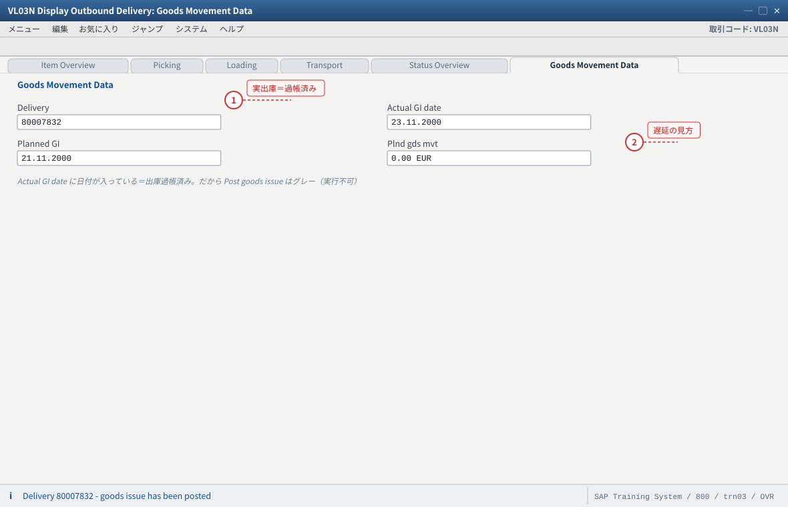
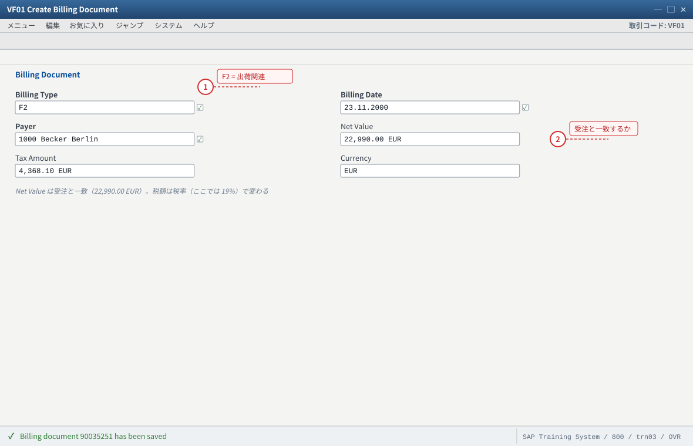
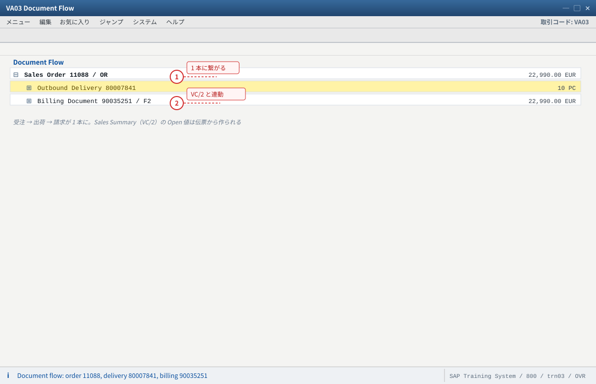

.png 放进 assets/gui/ 后执行 python3 tools/swap_gui_images.py <site> --apply 一键替换。练习④ 出荷と請求（VL01N → VF01）
VL01N）・ピッキング・出庫過帳（PGI）・請求（VF01）は動画には含まれていません。本站が受注から先の流れを補った内容として追加しています（受注が業務として成立するために必要だからです）。「どこからが動画の範囲か」を意識して読んでください。VL01N で出荷伝票作成 → ③ VL02N ピッキングと PGI → ④ VL03N で照会（動画の見方）→ ⑤ VF01 で請求 → ⑥ 伝票フローと VC/2 で確認。VL01N）
4-3 ピッキングと出庫過帳（VL02N・PGI）
4-4 出荷伝票の照会（VL03N・動画と同じ見方）
4-5 請求（VF01）
4-6 伝票フローと Sales Summary で確認
4-7 验收（完成基准）
4-1 出荷できる受注を準備する（前提の確認）
| 前提 | 満たしていないときの症状 | 確認方法 |
|---|---|---|
| 受注が出荷ブロックなし | 出荷伝票作成時に「ブロックされています」 | VA03 ヘッダ → 納入ブロック（练习②の 3 階層） |
| 与信ブロックなし（与信管理が有効な環境） | 与信ブロックで出荷が止まる | VA03 ヘッダ → 与信ステータス／FD32 |
| 納入日程行が存在し、納入日が入っている | 「納入日がありません」 | VA03 明細 → 納入日程行 |
| 在庫がある（在庫確認が有効な場合） | ATP 不足の警告・出荷数量が減る | CO09／MMBE／MD04 |
| 受注が不完全でない | 不完全な受注は出荷対象にならないことがある | V.02／VA03 のステータス |
VA03で练习①の受注を開き、ブロック（納入・与信）が無いことを確認する。- 明細の納入日程行に納入日が入っていることを確認する。
CO09またはMMBEで出荷プラントの在庫を確認する（在庫確認が有効な環境では、無いと出荷が作れません）。- 問題があれば先に直す（ブロック解除・納入日の変更・在庫の補充）。
② 出荷プラントの在庫が受注数量以上（または在庫確認が無効）。
③ 「出荷できる状態」の定義を 4 つの前提で説明できる。

- 1 受注タイプ OR と练习①で採番した受注番号で開く。表示モードで開けない＝その伝票が無い、が最初の切り分け
- 2 出荷できるかはヘッダで判断する：納入ブロック空欄・与信 OK・納入日程行あり＋出荷プラントの在庫あり
自システムでの確認：VA03 のヘッダで納入ブロック／与信ステータス、明細で納入日程行、CO09・MMBE で在庫の 4 点。受注番号は例（11088）です（自分の採番に読み替え）。
4-2 出荷伝票の作成（VL01N）
入力値
トランザクション： VL01N（Create Outbound Delivery with Order Reference） 出荷ポイント： 受注の出荷プラントから決定される（品目マスタの出荷プラント → 出荷ポイント） 納入日： 受注の納入日程行の日付（または検索用の日付範囲） 受注番号： 练习①で作った受注 作成後の確認： 明細の数量（Delivery quantity）と、受注数量の一致
VL01Nを起動し、出荷ポイントと納入日を入れる（出荷ポイントが F4 に出ない＝出荷プラントと出荷ポイントの割当を確認）。- 受注（
OR）の番号を入れて Enter。 - 対象の明細が出たら、出荷数量を確認して保存する。
- 出荷伝票番号を記録する（動画の
80007832に相当する自分の番号）。 - （発展）部分数量に変えて出荷し、伝票フローで受注残が残ることを確認する。
②
VA03 の伝票フローに出荷伝票が追加されている。③ 出荷伝票の出荷先・住所が受注と一致している。
② 受注が出てこない → 納入日が検索範囲外、または受注がブロック／不完全。
③ 在庫不足で警告が出る → 出荷は作れますが、ピッキング／PGI で詰まります（C13 の在庫確認）。

- 1 Delivery は保存時に採番される（受注番号とは別体系）。受注参照で作ると明細と数量が引き継がれる
- 2 Sales Organization と納入日は受注から。ここが想定と違うと出荷ポイントも変わる
自システムでの確認：VL01N の初期画面で出荷ポイントが F4 に出るか（出ない＝出荷プラントと出荷ポイントの割当が未了）。Route（輸送経路）は Transport タブで確認します。
4-3 ピッキングと出庫過帳（VL02N・PGI）
VL02Nで出荷伝票を開く。- ピッキング数量（Picked quantity）を入れる（通常は出荷数量と同じ。部分ピッキングも試せます）。
- 保存し、ステータスが「ピッキング完了」に近づくことを確認する（Status Overview タブ）。
- 出庫過帳（Post Goods Issue）を実行する（ボタン、または メニュー）。
- PGI 後、在庫が減ったかを確認する：
MMBE／MB51（移動タイプ601の明細）／MM03のプラント在庫。 - 会計への影響を確認する：売上原価の計上（
OBYCの設定による）。可能ならFB03／MB51で金額を確認する。 - （注意）PGI は取消に専用処理が必要です。実行したら伝票フローと在庫を必ず記録してください。
②
MB51 に移動タイプ 601 の明細が出て、在庫が減っている。③ 動画の出荷伝票
80007832 の「Post goods issue がグレー（実行不可）」の理由を、「既に出庫過帳済みだから」と説明できる。② 在庫が減っていない → 移動タイプと在庫の管理単位（プラント／保管場所）を確認。
③ PGI 後の取消は
VL09 等が必要。練習では「実行前に記録」を徹底。MB51 の明細 ③ 出荷伝票のステータス を記録し、PGI で何が変わったかを 3 行で説明してください。
- 1 ピッキング数量が納入数量と一致すると「ピッキング完了」に進む。部分数量だと受注残が残る
- 2 ピッキングのあとは Post goods issue。実行すると在庫が減り、取消には VL09 等が必要になる
自システムでの確認：PGI の後で MB51（移動タイプ 601 の明細）、MMBE のプラント在庫、VL03N の Status Overview を見る。PGI の前後で必ず記録を取る。
4-4 出荷伝票の照会（VL03N・動画と同じ見方）
ここで動画（25:24）の見方に戻ります。動画の出荷伝票 80007832 では
タブ構成（Item Overview／Picking／Loading／Transport／Status Overview／Goods Movement Data）と、
計画出庫 21.11.2000／実出庫 23.11.2000 の差が示されていました。
VL03Nで自分の出荷伝票を照会し、各タブの意味を確認する（とくに Status Overview と Goods Movement Data）。- ヘッダで計画日と実績日（計画出庫・実出庫）を確認し、動画と同じく遅延の見方を押さえる。
- 伝票フローを開き、受注 → 出荷 → 請求（まだ無ければ受注 → 出荷）の連鎖を確認する。
- 動画の画面と自分の画面を並べ、違う項目（リリース差）をメモする。
VL03N の Status Overview で出庫過帳の状態が読める。② 計画日と実績日の差から納期遅延の有無を言える。
③ 伝票フローで受注と出荷が繋がっている。

- 1 明細の数量が受注と一致しているか。ここが受注 → 出荷の連鎖の土台になる
- 2 Document Date と Planned GI を押さえる。計画と実績の差は Goods Movement Data タブで読む
自システムでの確認：VL03N で自分の出荷伝票を開き、タブ構成とヘッダの日付欄のラベル（Planned GI / Actual GI date）を動画と見比べる。ラベルや並びは版により異なります。

- 1 実出庫日に日付が入っていれば出庫過帳済み。動画で Post goods issue がグレーの理由がここで分かる
- 2 計画 21.11.2000 と実績 23.11.2000 の差が納期遅延。Status Overview タブと併せて読む
自システムでの確認：Goods Movement Data タブと Status Overview タブを見る。Post goods issue がグレーのときは「既に出庫過帳済み」か「権限が無い」を疑う。
4-5 請求（VF01）
入力値
トランザクション： VF01（Create Billing Document） 参照： 出荷伝票（または受注。請求タイプの決定による） 請求タイプ： 出荷関連なら F2（請求書）など。伝票タイプ側の「出荷関連請求タイプ」で決まる 請求日付： 当日（または指定日） 確認： 請求書の正味価額が受注と一致するか／税が入っているか
VF01を起動し、出荷伝票番号（または受注番号）を入れて Enter。- 請求タイプ（例
F2）と日付を確認して保存する。 - 請求書番号を記録し、正味価額・税・通貨が受注と一致するか確認する（
VF03で照会）。 - 会計への転記を確認する（
FB03／VF03の会計伝票）。環境により転記のタイミングが異なります。 VA03の伝票フローで受注 → 出荷 → 請求が 1 本になったことを確認する。
② 伝票フローに 3 種の伝票（受注・出荷・請求）が並ぶ。
③ 請求タイプがどこで決まったか（出荷関連／受注関連）を説明できる。
② 金額が受注と違う → 与力の再決定（請求側の価格決定手順）や数量差を確認。受注と請求で価格決定手順が違うことがあります。
③ 転記されない → 会計期間や権限の問題。講師に確認。

- 1 請求タイプ F2 は出荷関連請求タイプの設定から決まる。ここが伝票フローの 3 本目を決める
- 2 Net Value が受注と一致するか、税が入っているかを、数量差と併せて確認する
自システムでの確認：VF01 で出荷番号を入れると請求タイプが提案される（提案されない＝出荷関連請求タイプの設定）。金額が受注と違うときは請求側の価格決定手順と数量差を確認。請求書番号は例（90035251）。ヘッダ項目の並びは版により異なります。
4-6 伝票フローと Sales Summary で確認する（動画の見方に戻る）
VA03→ 伝票フローを開き、受注・出荷・請求の番号と数量・金額を表に書き出す。VC/2（Sales Summary）を得意先1000で実行し、Open Sales Order Val／Open Delivery Value／Open Bill. Doc. Val がどう変わったかを確認する。- ビュー
101（Last SD Documents）で、作成した請求書が一覧に出るか確認する（統計更新のタイミングに注意）。 - 「動画が示したかったこと」を 3 行でまとめる：受注は出荷と請求に繋がって初めて業務になる／情報照会は伝票と連動する／SIS の値は伝票から作られる。
②
VC/2 の Open 値が変化した（または変化しない理由を説明できる。統計更新のタイミング）。③ 動画（
25:24 の出荷照会）がなぜこの文脈で出てきたかを説明できる。
- 1 受注の下に出荷と請求がぶら下がる。番号・数量・金額の整合をここで確認する
- 2 請求まで並べば受注は業務として完結。VC/2 の Open 値もこの伝票から動く
自システムでの確認：VA03 → 伝票フローで 3 種の伝票を確認し、VC/2（Sales Summary）で Open Sales Order Val／Open Delivery Value／Open Bill. Doc. Val の変化を見る。番号は例です（統計更新のタイミングに注意）。
4-7 验收（完成基准）
- 出荷できる受注の条件（ブロックなし・納入日程行あり・在庫あり・不完全でない）を 4 つ言える
VL01Nで出荷伝票を作成し、出荷数量＝受注数量になった- 出荷ポイントが何から決まったか説明できる
VL02Nでピッキング数量を入れ、PGI を実行した- PGI の前後で在庫が減ったことを
MB51（移動タイプ601）で確認した VL03Nの Status Overview と計画/実績日を読めた（動画と同じ見方）VF01で請求書を作成し、金額が受注と一致することを確認した- 伝票フローに受注・出荷・請求の 3 種が並び、数量・金額が整合している
VC/2で Open Sales Order Val／Open Delivery Value／Open Bill. Doc. Val の変化を確認した- 動画の範囲（照会まで）と本站の補足（作成側）の境界を説明できる
- つまずいた点を「症状 → 根因 → 証拠 → 処置 → 再発防止」で 1 件以上記録した